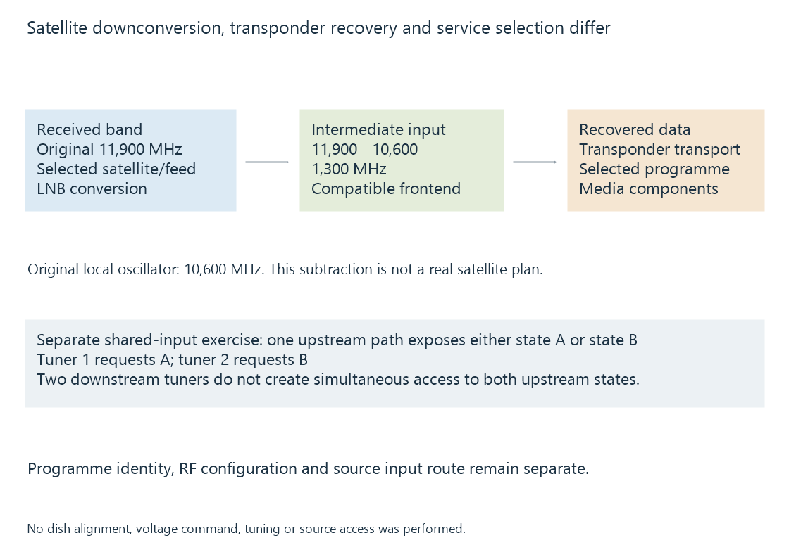

Satellite television reception
Satellite television reception selects a compatible transponder and satellite-input arrangement before recovering programme services and their access/coding requirements.
Satellite reception begins with a dish and a compatible input arrangement that delivers the wanted radio signal to a tuner. A demodulator then recovers data from the selected transponder signal.
The programme chosen by the viewer is a later selection within that recovered data.
The LNB changes the frequency range
The low-noise block downconverter, or LNB, receives a satellite-band signal and converts a selected input range into an intermediate-frequency range suitable for its receiver path.
Use an original difference-frequency model:
Declared received frequency = 11,900 MHz
Declared local oscillator = 10,600 MHz
Difference frequency = 1,300 MHz
The tuner’s input in this model is at 1300 MHz, not the original 11900-MHz satellite frequency. Real LNB arrangements specify their bands, oscillator choices and switching behavior.

The numbers do not identify an actual satellite or installation.
Transponder selection is not programme selection
| Selection | Property involved |
|---|---|
| Satellite/input route | Which dish/feed or distribution path reaches the receiver |
| Transponder signal | Frequency, polarization, symbol rate and transmission arrangement |
| Programme service | Identifier and encoded components within the recovered data |
Several programme services can share one transponder stream. DVB-S and DVB-S2 define related but different transmission/coding arrangements.
The selected programme’s video and audio codecs are another layer. A demodulator supporting DVB-S2 does not itself promise the application can decode every service carried there.
Shared input selection can constrain concurrency
In an original shared-input exercise, two tuners depend on one upstream path that can expose only one of two input states, A or B, at a time.
One requested transponder needs state A; another needs B. Having two tuners does not make those mutually exclusive input states simultaneously available.
An installation using separate suitable feeds or another supported distribution arrangement can have a different relationship. Its physical routing and receiver capabilities determine the actual constraint.
Tuner concurrency distinguishes simultaneous acquisition resources from the number of requested programmes.
A received service may have another access requirement
A transponder can contain unencrypted or protected services. Correct tuning and signal recovery do not replace the required supported access/protection route.
An Emby backend can expose a compatible service through its implemented interface; it must first be able to acquire and supply that service. The client then needs its actual media representation.
See Also
- DVB-S satellite television
- DVB-S2 satellite television
- Tuner concurrency and shared acquisition
- Encrypted TV channels and supported playback paths